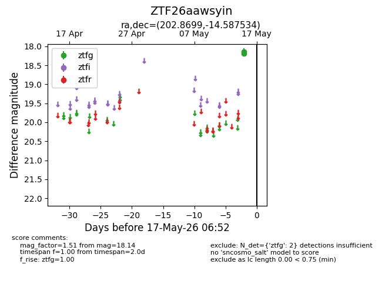
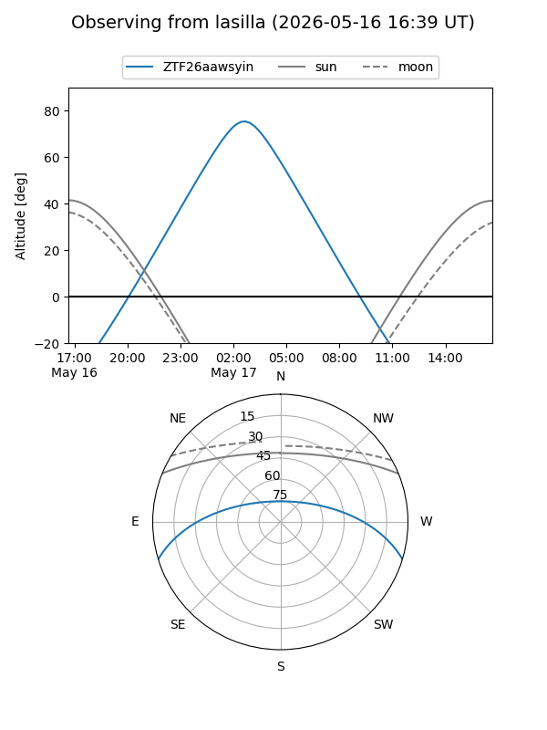
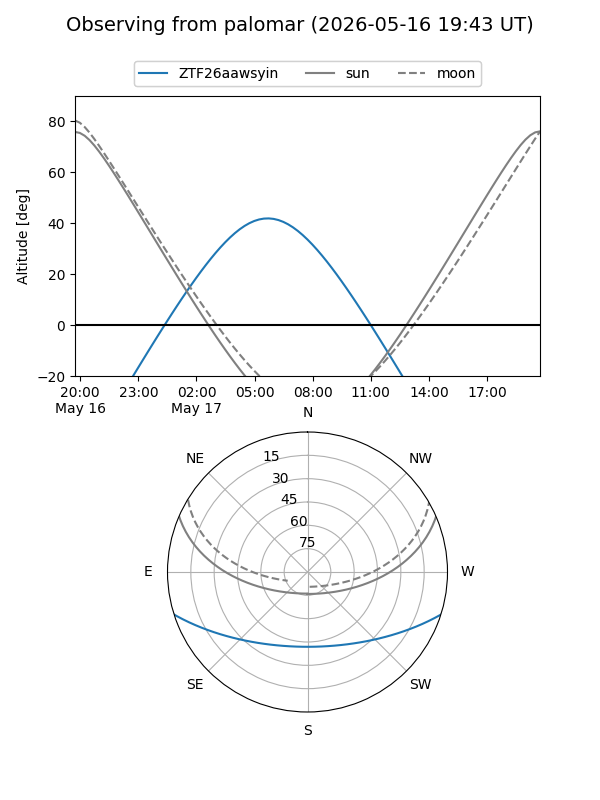

ZTF26aawsyin
Target ZTF26aawsyin at 2026-05-17 06:54
Aliases and brokers:
FINK: link
Lasair: link
ALeRCE: link
alt names
ZTF26aawsyin (ztf,fink_ztf)
Coordinates:
equatorial (ra, dec) = 202.8699,-14.58753
equatorial (HMS+DMS) = 13:31:28.77,-14:35:15.12
galactic (l, b) = (317.2579,+47.16736)
Flags:
Photometry:
last ztfg=18.14
2 ztfg detections
Lightcurve

Visibility


Additional plots